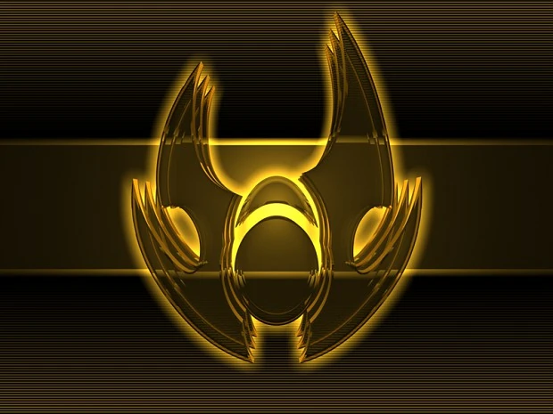

Supreme Commander Forged Alliance Factions
Faction
Faction in Supreme Commander is a military force in the galaxy fighting in the Infinite War. When playing the game, a player selects one of the available factions to fight for them. This choice determines which units are available to the player. There are three factions in the Supreme Commander vanilla version, and a fourth was introduced with Forged Alliance.
United Earth Federation
Cybran Nation
Aeon Illuminate
Seraphim (Forged Alliance only)
Faction details
Information about United Earth Federation
The United Earth Federation is the "core human" faction, representing the natural technological evolution of modern human technology. The UEF seeks to unify the once great Empire that is now splintered. They are in combat with the Cybran Nation and the Aeon Illuminate. UEF military is more conventional-styled than the others, relying on "classic" weaponry like battle tanks and projectile weapons such as bullets and explosives. Its weapon choice usually makes UEF units to be of limited efficiency against moving targets, as projectiles aren't too good at tracking targets, but their sheer power can do serious damage to structures and slow-moving units. Also, UEF units tend to be more heavily armored.
Information about Cybran Nation
The Cybran Nation is one of four factions ​in Supreme Commander universe. They are fighting for their independence, after many years of enslavement by the Earth Forces. Cybran units are often insect-like in appearance and known for being extremely versatile: from assault bots which can repair other units to walking naval destroyers. Cybran versatility, both within their units and tactics, allows them to improvise quickly and modify their plans. They also use stealth and cloaking technology more than the UEF, Aeon Illuminate or Seraphim. The Cybran units are quite agile; however, they do not possess the firepower necessary to destroy experimentals with ease. Cybran weapons are generally fast-firing lasers that can wreak havoc on Tech 1 or 2 units; the attacking force can then melt away without a trace. It is important to remember to support Cybran experimentals with other units, such as air units, due to their softer nature than other factions' units from a cause on their focus on mobility.
Information about Aeon Illuminate
The Aeon Illuminate is the third faction in Supreme Commander universe. They are made up of humans that follow the Way, the philosophy of the Seraphim aliens found years ago on Seraphim II before they were wiped out by xenophobic humans led by Commander Smith.
Information about Seraphim
The Seraphim were an ancient civilization, believed to have existed long before mankind. Seraphim are an alien species introduced in Supreme Commander: Forged Alliance. It is the species that the Aeon found on Seraphim II, and who taught them the delicate intricacies of The Way. Their race was long thought to be extinct, but in reality, the colony on Seraphim II was comprised of exiles who believed they could follow The Way without sacrificing the ability to fight. When Black Sun was deployed by the UEF, it created a rift between the Seraphim's realm and humanity's. A legion of Seraphim units can be seen emerging through the rift in the intro sequence, jumpstarting the events of the game's plot.
